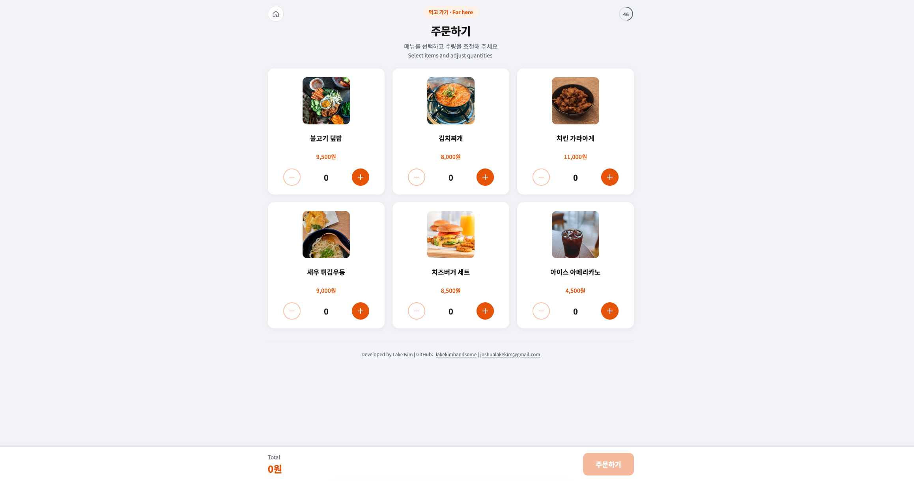

메뉴 선택과 주문 흐름을 체험할 수 있는 식당 키오스크 예시 웹 애플리케이션입니다.
식당 키오스크처럼 메뉴를 선택하고 장바구니에 담아 주문하는 흐름을 구현한 예시 프로젝트입니다. 터치 친화적인 UI를 목표로 제작했습니다.

키오스크 UI의 메뉴 선택, 옵션 추가, 주문 확인 같은 실사용 흐름을 웹으로 구현하며 인터랙션 설계를 연습하는 것이 목적이었습니다.